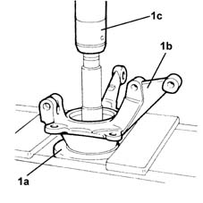
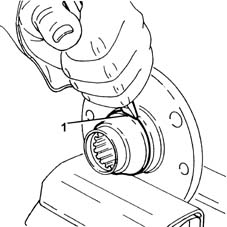
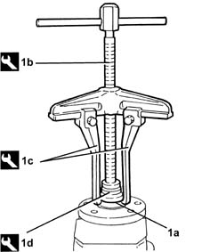
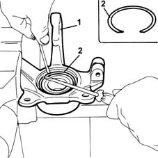
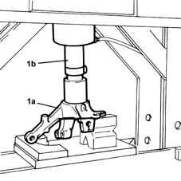
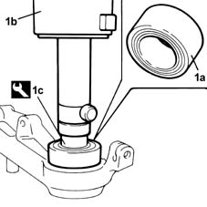
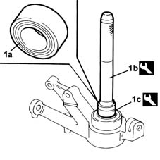
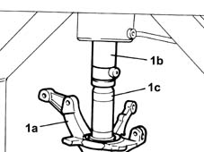

4450C34 bearing of one front wheel hub, l/h or r/h - replace with pillar removed
- Path
- Procedures > 44 SUSPENSION AND WHEELS > 4450 WHEELS AND HUBS > 4450C front wheel hubs > 4450C34 bearing of one front wheel hub, l/h or r/h - replace with pillar removed
- Kind
- repair procedure (removal / refitting; the operation number is the code)
- Applies to
- all engines; all production periods
- Interactive page
- https://sloeber94.github.io/elrnDB-lYpsln/en/#/2429269
Applies to: all engines; all production periods
 Removing
Removing
 Refitting
Refitting1. Remove the front hub (1a) from the steering knuckle (1b) using a hydraulic press (1c).

Applies to: all engines; all production periods
Position the wheel hub in a vice fitted with protective jaws.
1. Move the bearing inner race away from the front hug using a chisel to allow the extractor arms to be fitted.

Applies to: all engines; all production periods
1. Remove the front wheel hub bearing inner race (1a) using the tools (1b), (1c) and (1d).
 | Name | Country |
|---|---|---|
1b | Extractor | 1.854.005.003 |
| Name | Country |
|---|---|---|
1c | Extractor | 1.854.005.002 |
| Name | Country |
|---|---|---|
1d | Pad | 1.845.028.000 |

Applies to: all engines; all production periods
1. Position the steering knuckle in a vice fitted with protective jaws.
2. Remove the front hub bearing circlip.

Applies to: all engines; all production periods
1. Remove the front hub bearing from the steering knuckle (1a) using a hydraulic press (1b).

Applies to: all engines; all production periods
Refitting
Removing.
1. Place a new front wheel hub bearing (1a) on the steering knuckle using a hydraulic press (1b) and tool (1c).
| Name | Country |
|---|---|---|
1c | Fitting tool | 1.875.055.000 |

Applies to: all engines; all production periods
1. If a hydraulic press is not available, fit a new front wheel hub bearing (1a) on the steering knuckle using the tools (1b) and (1c).
| Name | Country |
|---|---|---|
1b | Grip | 1.870.007.000 |
| Name | Country |
|---|---|---|
1c | Fitting tool | 1.875.055.000 |

Applies to: all engines; all production periods
Refit the front wheel bearing circlip in its seating.
1. Fit the front wheel hub in its housing on the steering knuckle (1a) using a hydraulic press (1b) and placing a suitable diamter cylinder (1c) in between.
